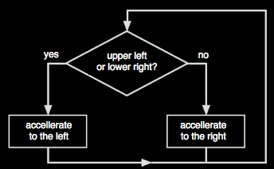

The simulation on the right shows a seal that is able to balance a ball.
The ball is joined to the seal's nose by a spring.
The movement of the seal is controlled by a very simple controlling structure. If the ball is (seen from the nose) either in the left upper of right lower quadrant the the seal accelerates to the left. Otherwise it accelerates to the right.
The quadrants are indicated by the circle in the upper right corner of the simulation. You can tease the seal by moving or dragging the ball. The seal does its best to keep balancing.
|
 |
The control loop for balancing